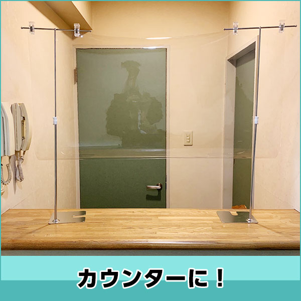
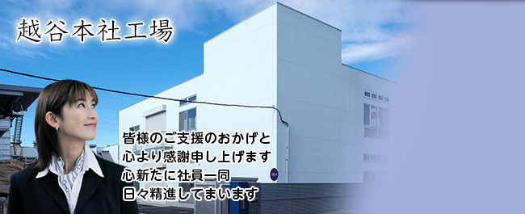
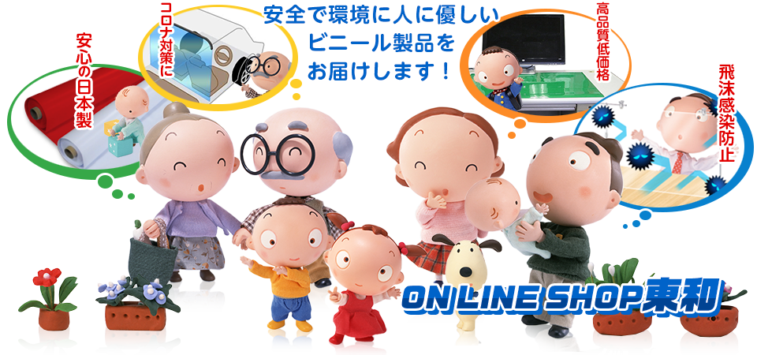

01 — SHEET
プラスチック・シートの製造販売
軟質塩化ビニール、PS（ポリスチレン）を中心とした各種プラスチック・シート。厚み・巾・硬さ・色・絞模様・特殊配合はご要望に応じて生産します。裁断加工も承ります。



シートのご相談は「どの樹脂か」から始まります。現行サイトでは3つの樹脂が別々のページに分かれており、並べて比べることができませんでした。1枚の表にまとめています。
| 樹脂 | 主原料・配合 | 選ぶ理由 | 用途の例 | 指定できる項目 |
|---|---|---|---|---|
| 軟質塩化ビニールSOFT PVC | 非フタル酸系可塑剤 BASF社 Hexamoll DINCH が中心 |
安全性。フタル酸系可塑剤の含有量を限りなくゼロに抑えています | 乳幼児・学童向け玩具／医療用品／エコ関連製品／日用雑貨／POPツール 手帳バインダーキャラクターグッズ浮き輪ランチョンマット |
厚み／巾／硬さ／色／絞模様／特殊配合 |
| 軟質ポリオレフィンSOFT POLYOLEFIN | EMMA樹脂（エチレン・メチルメタクリレート共重合体） EVA樹脂（エチレン・酢酸ビニール共重合体）の特殊配合 |
加工性と環境性。高周波ウエルダーでの加工性に優れ、焼却時に塩素系ガスが発生しません | 一般的な玩具・文具のほか、難しいとされていた空気物のシートにも対応 手帳電気機器ケース文具・雑貨ビーチボール |
厚み／巾／色／絞模様 |
| ポリスチレンPOLYSTYRENE | GPPS／HIPS／特殊スチレン系樹脂 ベルトマシーン2機で製造 |
透明性と印刷適性。無味無臭で耐水性に優れ、光沢があります | 食品容器／ブリスターパック／電子機器包装素材 ICトレーキャリアテープブリスター |
厚み／巾／メーター数／樹脂／用途 |
フタル酸系可塑剤6種（DEHP・BBP・DIDP・DBP・DINP・DnOP）は、欧州・米国・日本国内において、特に乳幼児や学童向け製品に対して一部使用規制を受けています。当社は従来のフタル酸系可塑剤の含有量を限りなくゼロに抑え、世界基準の安全性をもつ BASF社 Hexamoll DINCH を中心に使用しています。
あわせて、当社が開発した防炎配合ビニールシート「モエレ」は、公益財団法人 日本防炎協会が定める「防炎製品」に認定されました。（「モエレ」はアイヌ語で静かな水面を由来としています）
越谷本社工場の新社屋完成にともない裁断機を導入しました。当社で製造したシートを、ご希望のサイズに裁断してカット販売いたします。
01 — SHEET
軟質塩化ビニール、PS（ポリスチレン）を中心とした各種プラスチック・シート。厚み・巾・硬さ・色・絞模様・特殊配合はご要望に応じて生産します。裁断加工も承ります。
02 — ROOFING
新日本一：特殊合成樹脂による三重構造で施工性・耐候性・結露防止に優れ、木ズリ部分の改良で作業効率と遮水性を向上。日本一ライト：その特性を受け継ぎつつ軽量・高コストパフォーマンス。東和ルーフ：スベリ止め機能を改良し、急勾配の屋根工事での安全性を向上。
03 — PACKAGING
レジ袋、ゴミ袋、ショッピングバッグ、肥料袋等の各種ポリエチレン包装資材・フィルムの製造販売。
04 — SPORTS
現行サイトの事業内容に記載のある事業です。
埼玉県越谷市の本社工場、東京の営業所、栃木県鹿沼市の2工場です。
HEAD OFFICE & FACTORY
SALES — TOKYO
FACTORY — TOCHIGI
FACTORY — TOCHIGI
厚み・巾・硬さ・色・絞模様など、仕様が固まっていない段階でもご相談ください。
用途で決まります。安全性と柔らかさが要るなら軟質塩化ビニール（非フタル酸系可塑剤を使用、乳幼児向け玩具や医療用品にも）。高周波ウエルダーでの加工性と、焼却時に塩素系ガスが出ないことを求めるなら軟質ポリオレフィン。透明性・光沢・印刷適性が要るならポリスチレンです。
従来のフタル酸系可塑剤の含有量を限りなくゼロに抑え、非フタル酸系可塑剤である BASF社の Hexamoll DINCH を中心に使用しています。フタル酸系可塑剤6種（DEHP、BBP、DIDP、DBP、DINP、DnOP）は欧州・米国・日本国内で、特に乳幼児や学童向け製品に対して一部使用規制を受けています。
できます。軟質塩化ビニールは厚み・巾・硬さ・色・絞模様・特殊配合をご要望に応じて生産します。軟質ポリオレフィンは厚み・巾・色・絞模様に応じて。ポリスチレンは厚み・巾・メーター数・樹脂（GPPS、HIPS、特殊スチレン系樹脂）・用途に応じて生産します。
越谷本社工場の新社屋完成にともない裁断機を導入し、裁断加工を始めました。当社で製造したシートをご希望のサイズに裁断してカット販売いたします。詳しくはスタッフにお問い合わせください。
「日本一」シリーズを製造販売しています。新日本一は特殊合成樹脂による三重構造で施工性・耐候性・結露防止に優れ、木ズリ部分の改良により作業効率と遮水性を向上させました。日本一ライトはその特性を受け継ぎつつ軽量でコストパフォーマンスに優れます。東和ルーフはスベリ止め機能を改良し、急勾配の屋根工事での安全性を高めました。
当社が開発した防炎配合ビニールシート「モエレ」が、公益財団法人 日本防炎協会の定める「防炎製品」に認定されました。「モエレ」はアイヌ語で静かな水面を由来としています。
東和合成工業株式会社 本社工場
〒343-0844 埼玉県越谷市大間野町4丁目224番地